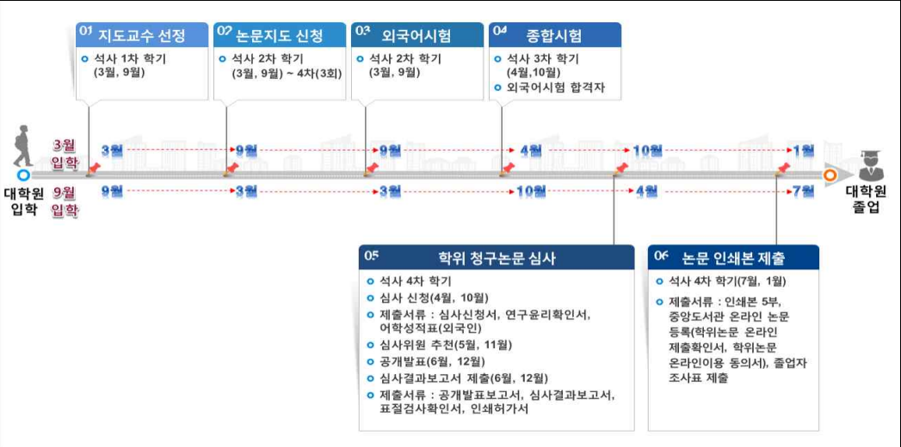

Graduation
졸업 방식
미디어커뮤니케이션학과 대학원 신입생 오리엔테이션 자료에 담긴 졸업·논문 절차를 정리했습니다. 내용은 해당 PPT 원문만 옮겼으며, 학사 규정이 바뀌면 학교·학과 공지를 우선합니다.
01과목 소개
필수과목 (석사 및 박사)
- 미디어 연구방법론 1 (1학기 개설)
- 커뮤니케이션이론 1 (2학기 개설)
선택과목
- 미디어 연구방법론 2
- 국제커뮤니케이션
- PR 캠페인
- 커뮤니케이션이론 2
- 저널리즘 이해
- 질적연구방법론
- 미디어 산업과 정책 연구
- 광고기획 제작 세미나
- 인간-컴퓨터 상호작용 연구방법론
- 미디어 문화연구
- 영상기획 제작 세미나
- 사용자중심 인터페이스 디자인
- 디지털미디어론
- 헬스커뮤니케이션
- 광고캠페인
- 미디어 리터러시
- 통합브랜드 커뮤니케이션
- 영상의 이해
- 디지털 사진 세미나
- PR론
02선수 과목
- 유사 전공의 입학자는 직전 학위과정에서의 성적취득 자료를 근거로 12학점 범위 내에서 학과 내규에 따라 선정한 선수과목으로 이수해야 함
- 선수과목 이수대상자는 지정과목이 개설된 학기에 과목 수의 제한 없이 수강신청을 할 수 있음
- 선수과목은 졸업 이수학점에 포함되지 않으나 이수하지 않으면 학위 청구논문 제출자격을 부여하지 않음
- 선수과목 이수성적은 70점 이상으로 P(PASS)로 표기 (70점 미만은 F(FAIL)로 처리됨)
학과 선수과목 (학부에서 수강)
- 커뮤니케이션이론 1 (2학기 개설)
- 미디어조사방법론 1 (2학기 개설)
03지도교수 신청
학사행정 → 대학원힉사 → 졸업관리 → 학생화면 → 논문지도교수 신청/변경등록
- 신규 버튼 클릭 후 신청구분에 신규/변경을 선택한다
- 대학원생이 지도를 받고자 하는 지도교수를 선택한다
- 저장버튼을 클릭하여 입력한 데이터를 저장한다
- 논문제목 입력 및 수정 완료 후 저장한다
- 지도교수 승인 및 논문지도 점수 입력
04논문지도 신청
2학기
지도교수 신청 후 면담 필수
Proposal (문제의 제기 및 연구목적까지 기술) 가지고 지도신청
논문지도 평가 80점 이상이어야 합격
지도교수 신청 후 면담 필수
Proposal (문제의 제기 및 연구목적까지 기술) 가지고 지도신청
논문지도 평가 80점 이상이어야 합격
3학기
Proposal (관련문헌 고찰과 연구문제 및 연구방법론까지 기술) 가지고 지도신청
논문지도 평가 80점 이상이어야 합격
Proposal (관련문헌 고찰과 연구문제 및 연구방법론까지 기술) 가지고 지도신청
논문지도 평가 80점 이상이어야 합격
4학기
결과분석까지 나온 논문가지고 지도신청
논문지도 평가 80점 이상이어야 합격
결과분석까지 나온 논문가지고 지도신청
논문지도 평가 80점 이상이어야 합격
공통
석사 3회, 박사 5회 이상 받아야 함
신청 해당학기 내에만 논문지도평가 받을 수 있음
논문지도를 받은 후에 지도교수 학사행정시스템에서 논문지도 평가 입력, 신청학기 꼭 받아야 함
석사 3회, 박사 5회 이상 받아야 함
신청 해당학기 내에만 논문지도평가 받을 수 있음
논문지도를 받은 후에 지도교수 학사행정시스템에서 논문지도 평가 입력, 신청학기 꼭 받아야 함
05외국어 시험
일반대학원 외국어시험 폐지 — 졸업요건(외국어시험) 변경사항
적용 시기: 2026년 2월 졸업예정자부터 적용
외국인 유학생 어학성적 제출 관련 안내
- 외국인 유학생들의 경우, 위의 졸업요건과는 별도로 기존의 입학규정에 기재된 어학성적을 졸업 전 제출
- TOPIK 4급, 또는 영어능력시험(TOEFL 550, CBT 210, iBT 80, IELTS 5.5, TEPS 550점 등) 취득 증명서 제출 필요
06종합시험
4월, 10월 (신청 4월 초, 10월 초)
응시자격 · 석사 2과목
- 커뮤니케이션이론 1
- 미디어연구방법론 1
응시자격 · 박사 4과목
- 커뮤니케이션이론 1, 미디어연구방법론 1
- 학과에서 지정한 2개의 선택과목
합격 기준: 각 과목 80점 이상
| 구분 | 석사학위과정 | 박사학위과정 |
|---|---|---|
| 성적 | 평균평점 3.0 이상 | 평균평점 3.0 이상 |
| 취득학점 | 취득학점(수강신청학점 포함) 24학점 | 취득학점(수강신청학점 포함) 36학점 |
07석사학위논문 대체 과정 신청
석사학위논문 대체과정 신청 자격 조건
- 종합시험에 합격한 자
- 3회 이상 논문지도를 받은 자
- 해당학기 수강신청 학점을 포함하여 총 30학점 이상을 이수하고 평점 평균이 3.0 이상인 자
08학위논문 신청
예비 발표
학위청구논문을 신청하고자 하는 학생은 논문 초고 제출 3개월 전에 본인이 연구한 결과를 주임교수, 학과교수와 전공분야와 관련이 있는 다수의 연구자가 참석한 가운데 대학원 또는 학과에서 지정한 장소에서 예비발표를 하여야 한다.
- 학위청구논문 신청 (4월 말, 10월 말)
- 학위청구논문 제출 (6월 초, 12월 초)
- 학위청구논문 연구계획서 — 석사과정은 학위청구논문 제출하기 6개월 전 제출 / 박사학위과정은 학위청구논문 제출하기 1년 전에 제출
09대학원 석사과정 흐름도
오리엔테이션 PPT 10번째 슬라이드의 흐름도 이미지입니다. 글자 원문은 이미지에만 있어 별도 전사하지 않았습니다.

출처: 미디어커뮤니케이션학과 대학원 신입생 오리엔테이션 PPT. 개인 휴대폰·TRI:ON·학생 개인정보는 수록하지 않습니다.